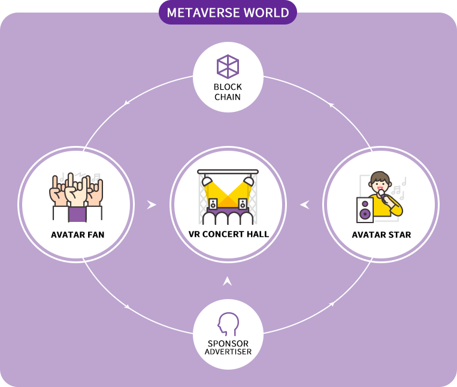
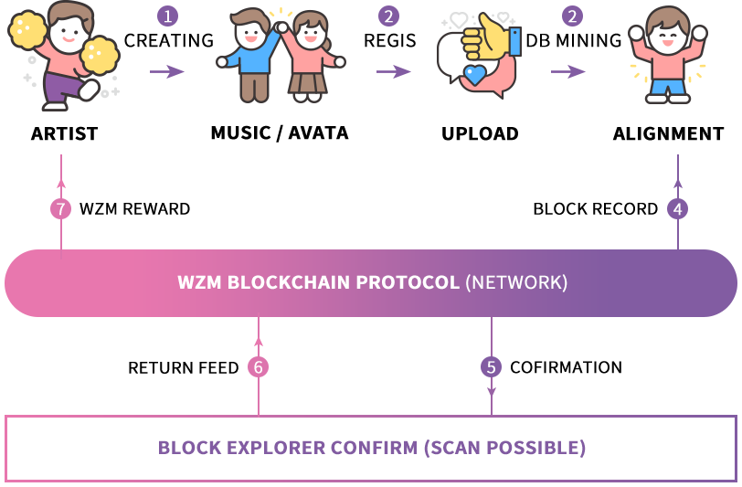
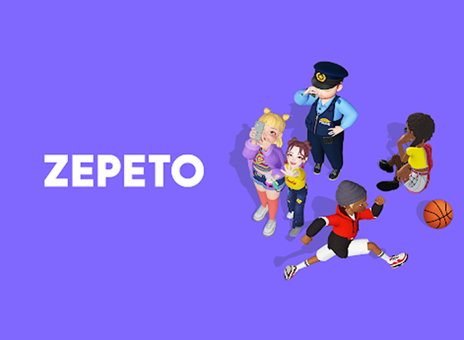
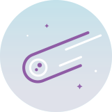
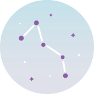

OUTLINE
- stars and fans,
- Meet in virtuality

Space music (WZM) in a nutshell, meta-bus and blockchain technology.
It is a platform that connects stars and fans based on this platform. Star and
Fans are the most important participants in space music, and they're using space music protocols.
Through this, we can communicate in various ways and form multifaceted relationships.
The advertiser is also one of the participants in space music and is the foundation of the platform.
It is responsible for building economy.
Big content producers (cp) : 1) The singer, is the building blocks music's ecosystem.
(sponsor) consumer users, fans : (cc) 3) 2) source content, advertisers, etc.
The music platform when it came to designing the basis of the space three basic components are required.
An absolute requirement.
The system basic components of the music space bus type 1) virtual reality : vr
And, avatars, users of the projection of the virtual world.2) : block chain.
Content producers of creative products for the original copyright protection, and platform.
Currency code to react to my virtual assets Rewards, transparent and reasonable compensation.
Apply the system.These two components are a key technology system.
And based on the reliability of the base.
The space music platform vision in entertainment markets, new eontaekteu
Safe arrival of the cultural industries and creators of the completion of reasonable compensation system ".
This new more transparent culture through music leading to the formation leader.
As a platform.
PLATFORM KEY FEATURES
SYSTEM FLOW

Space music platform content production, consumption and other activities of the star and fan services (wzm) platform to begin with.All activities wzm protocol details the activities of users on the differential Rewards provides a reasonable as a token by analyzing all the details.Then was traffic using the platform of the activities of these between acting and riaekting an ad in the request and branding advertising protocol by the bespoke ai wzm possible.Chain block of all details of the advertising campaign also logged in the transparent and reliable by publicity can get feedback.
The artist (content producer) decides whether to record data under the WZM protocol. You may not upload any data, or you may upload the entire data. Some data can also be erased and uploaded.The WZM protocol enables consumers to take ownership of data by giving users the right to choose data. Even if a user decides to upload part or all of the payment data, the user's personal information shall not be disclosed through anonymization or encryption. The WZM platform will induce more content production and activity by paying WZM tokens as compensation for users uploading payment data to the blockchain. WZM tokens, which are paid to users, are paid from space music pools secured through inflation of the blockchain itself.User activity data stored in the blockchain for sponsors will be used primarily to execute ads. Advertisers can process published activity data and identify consumers suitable for advertising purposes and conduct advertisements on the WZM network. In most cases, it may be difficult for advertisers to operate data directly, in which case adjustments can be made using a pool of intermediaries (partners).
Fans and artists, who are users, can be used in three areas with WZM tokens returned from feedback on the results of the aforementioned content production and consumption. First, 1) WZM tokens can be cashed through listed exchanges. 2) VOTING is possible for artists or product candidates to participate as governance and be registered in the market through a certain proof of interest (POS) in the VR-market. Through this exercise of voting rights, one can feel a sense of role and responsibility as a democratic representative of Congress in a space music digital society. Last but not least, 3) WZM tokens allow you to purchase merchandise in Marketplace or to pay for copyright split acquisition. This is also the core of the token ecosystem, which is considered the most important on the platform.
COPYRIGHT PROTECTION OF CREATIONS

Ownership of sound sources and avatar content generated in the new virtual reality content ecosystem of the space music platform is protected by smart contracts. When a CP (content producer) generates its own avatar or produces and registers a sound source, it rearranges the essential items to be recorded in the blockchain through the WZM database. The DB history, which has been rearranged, is sent to Polka Dotnet via the WZM blockchain protocol, and the records are placed in the Pending state and in the Parking state to prepare for the next block record to be created. The fee for records that occur at this time shall be supported by processing as payment on behalf of the WZM platform. Afterwards, as soon as the next Polka Dot block is created, it records the details of related works and confirms whether the block is recorded or not in the Polka Dot scan to check the final status of the record. After the final recording is completed, measuring the contribution of CPs on the WZM platform and immediately providing rewards to the WZM token completes the one copyright protection cycle.
Space Music (WZM) network allows anyone who participates in the ecosystem to become a VR content producer, and continuous revenue generation is possible through smart contracts. Consumers can rent or purchase content permanently. In order to create a sound market ecosystem related to virtual reality by utilizing blockchain, copyrights related to content production are protected while encouraging content producers to produce more content to help the entire VR industry become a virtuous cycle.
WINNING STRATEGIES THROUGH COMPETITIVE ANALYSIS

Winning Strategies Through Competitive Analysis
The rival of Space Music (WZM) is a multiverse-based 3D avatar called Geppetto. Geppetto has reached 3 million global downloads in just two months since its launch. Top of the list of free downloads in 35 countries around the world, including the United States, Japan, and South Korea. It's a recorded app. Geppetto doesn't stop at just making 3D avatars. I'm not only making a great 3D avatar image, but also making a video of it's on social media. It can also be easily shared. I also use avatars with a lot of friends in the app. It's like a mini-room in the old Cyworld. It is similar to friends visiting and sharing content together. Another characteristic is that Users are encouraging avatars to meet by calling each other within the app. These Geppetto first-person me more unique in virtual reality. Projecting is the biggest attraction for Generation Z. but These platforms also have disadvantages, and if we analyze and target them, Space music, a latecomer, could top the multiverse virtual reality industry.
LOADMAP
- 2021
- 2022
- 2023
- 2024
- 2025
- 2026
-

2021
BUILD UP
Project Open
White paper 1.0
Development and Planning platform.
Private Sale
Listed -

2022
PLATFORM START
A space launch Music app
Platform Public Test
White paper 2.0
Go into domestic promotion/marketing
Major Exchange listing. -

2023
UPGRADE
Space music pc app the market.
Southeast Asian expansion
Advanced Phase 2 Upgrade
Exchange listing expansion -

2024
GLOBAL PLATFORM
British-American/European expansion
+10,000,000 users
Daily Payment +50,000 Tx
Attracting investment in Series A+ -

2025
UNICORN ASCENSION
(+ 1 trillion) grade the unicorn
Enhanced level 3.
A series of investment + b -

2026
ipo
Korea Stock Exchange.
(INITIAL DISCLOSURE)